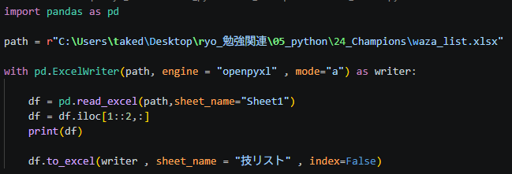
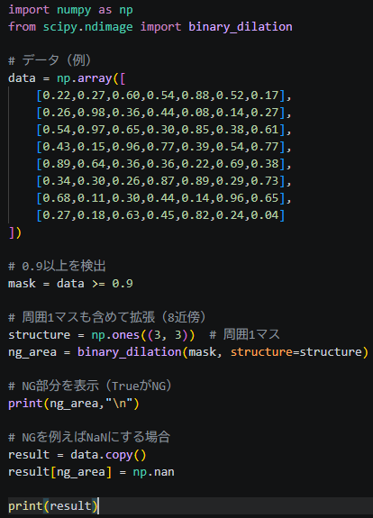
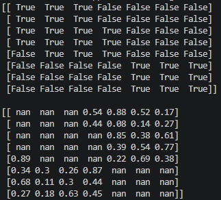

【Pandas】
- 日付を datetime に変換する。
- dfのA列を数値に変換する。
- dfのA列をリストに変換する。
- リストをデータフレームに変換する。
- 列名取得
- 条件抽出
- groupby
- merge
- 欠損値(Nan)処理
- sort/drop_duplicates
- 時間平均
- 関数を定義して条件で分岐を行う
- df読込の高速化
- ファイル名抽出
- 複数のdfをエクセルに纏めて保存する
- 複数のグラフ画像を1つのPDFで出力する。
- メモリ最適化
- 相関係数
- 周囲NG指定
- データ数の表示数変更
- 2つのデータフレームの差分抽出
- 正規表現
- 不良率の変化見積もり
- 不良マップの合成
df["date"] = pd.to_datetime(df["date"])
df["A"] = pd.to_numeric(df["A"] , errors = "coerce")
A_list = df["A"].to_list()
df = pd.DataFrame({"list_xx":xx , "list_yy":yy , "list_zz":zz})
print(df.columns)
① A列が100以上の行だけを抽出する。
df_sub = df[df["A"]>=100]
② lotが530C9、且つ、A列が100以上の列だけを抽出する。
df_sub = df[(df["lot"]=="530C9") & (df["A"]>=100)]
③ 判定列を作成し、Aが100より大きい行をNG、それ以外をOKにする。
df["判定"] = np.where(df["A"]>=100 , "NG","OK")
① ロットごとのSensitivityの平均を求める。
df.groupby("lot")["Sensitivity"].mean()
② 複数集計
df.groupby("lot")["Sensitivity"].agg(["mean","max","min","count"])
③ 条件付きgroupby
df[df["Sensitivity"]>0].groupby("lot")["Sensitivity"].mean()
df = df.merge(df_address , on="GrobalAddress" , how="left")
# left:d1基準。d1の行はすべて残し、df_addressにないものはNaN(１番よく使う。)
# right:d2基準。
# inner:dfとdf_addressの両方に存在するキーの行だけ
# outer:dfとdf_addressの行をすべて残す。全部盛り。
① df = df["A"].dropna() # 欠損値の行を削除する。
② df = df["A"].isna() # 欠損値かどうかを判断する。(Ture/Falseをかえす)
① timeの順番で行をソートする。
df = df.sort_values("time")
② lotの重複行を削除する。
df = df.drop_dulicates(subset="lot",keep="last")
# 「keep="last"」は、同じロットナンバーがあるときに、最後の1件だけを残すという意味。複数回の検査がある場合、最後の検査データが残る。
df["time"] = pd.to_datetime(df["time"])
df.set_index("time").resample("1H").mean()
def class_test(x):
if x<=30:
return "c"
elif x<=60:
return "B"
else:
return "A"
df["rank"] = df["test"].apply(class_test)
①「必要な列だけ読み込む」
usecols = ["lot","date","Sensitivity"]
df = pd.read_csv(csv_file , usecols=usecols)
②「読み込んだ結果を結合する場合はまとめる」
dfs = []
for file in files:
dfs.append(pd.read_csv(file,usecols = usecols))
df = pd.concat(dfs , ignore_index = True)
# ignore_index=Trueは、結合後にndexを振りなおすという意味。
from pathlib import Path
files = //C:/user/takeda/folder/file.csv
names = [Path(f).stem for f in files]

from matplotlib.backends.backend.pdf import PdfPages
import matplotlib.pyplot as plt
with PdfPages(B0490_defect_data.pdf") as pdf:
for ...
fig,ax = plt.subplots(figsize=(13.333,7.5))
ax.scatterplot(...)
plt.tight_layout()
pdf.savefig(fig)
plt.close(fig)
df = pd.read_csv(file,dtype={"lot":"category","測定値":"float32"})
correlation = df['A'].corr(df['B'])
print(correlation)


pd.set_option('display.max_columns', 100) #100列まで表示する。
pd.set_option('display.max_columns', None) #上限をなくしてすべて表示する。
df_new = df_A.iloc[:, :2].copy()
df_new[df_A.columns[2:]] = df_A.iloc[:, 2:] - df_B.iloc[:, 2:]
import re
# =======================================
# 数字だけを抽出する。
# =======================================
# \d：数字1文字
# {5}：数字5文字
text = "LOT12345"
result = re.search(r"LOT\d{10}", text)
if result:
print(result.group())
else:
print("見つかりませんでした")
# output -> 12345
# =======================================
# 文字と数字が混在している中から、特定の「文字-数字」を抽出する。
# =======================================
# []：許可する文字
# 例：[A-Za-z0-9]だと大文字、小文字、数字どれでもOK
text_2 = "製品A: ABC-12D45"
result_2 = re.search(r"[A-Z]{3}-[A-Za-z0-9]{5}" , text_2)
print(result_2.group())
# output -> ABC-12345
# =======================================
# 「+」 、「*」、「?」
# =======================================
# +：1個以上
# *：0個以上
# ?：0 or 1個
text_3 = "製品A: ABC-12D45"
result_3 = re.search(r"ABC-[A-Za-z0-9]*" , text_3)
print(result_3.group())
# =======================================
# 「()グループ化」 、「|（または）」
# =======================================
text_4 = "判定結果はNGでした。"
result_4 = re.search(r"OK|NG" , text_4)
print(result_4.group())
# =======================================
# re.findall
# =======================================
# findallは()の中だけを取り出す。groupは使えない。
text_5 = "製品番号はXYZ-12345です"
result = re.findall(r"([A-Z]{3})-(\d{5})", text_5)
print(result)
text = """
製品A: LOT12345
製品B: LOT67890
製品C: LOT24680
"""
result=re.findall(r"\d{5}" , text)
print(result)
# =======================================
# re.sub（探すパターン , 置き換える文字 , 対象文字列）
# =======================================
text = "LOT12345, LOT67890, LOT24680"
result = re.sub(r"LOT\d{5}", "LOT*****", text)
print(result)
# ==================================
# ライブラリのインストールをする。
# ==================================
# pip install pandas numpy scipy
import pandas as pd
from scipy.stats import norm
# ==========================================
# 1. 規格値を設定する
# ==========================================
A_LSL = 90
A_USL = 110
B_LSL = 190
B_USL = 220
# ==========================================
# 2. CSVファイルを読み込む
# ==========================================
path = r"C:\Users\taked\Desktop\ryo_勉強関連\05_python\wafer_data.csv"
df = pd.read_csv(path)
# ==========================================
# 3. 回帰係数を求める
# A平均 = 切片 + 回帰係数 × B平均
# ==========================================
# B平均とA平均の関係を計算する
slope = df["B_mean"].cov(df["A_mean"]) / df["B_mean"].var() # 傾き
# 回帰式の切片を計算する
intercept = df["A_mean"].mean() - slope * df["B_mean"].mean() # 切片
# 相関係数と決定係数も確認する
correlation = df["B_mean"].corr(df["A_mean"]) # 相関係数
r_squared = correlation ** 2 # 決定係数
print("回帰係数:", round(slope, 3))
print("切片:", round(intercept, 3))
print("相関係数:", round(correlation, 3))
print("決定係数 R²:", round(r_squared, 3))
# ==========================================
# 4. Bの変更量ごとに不良率を計算する
# ==========================================
results = []
for change_B in range(0, 21, 2):
# 各ウエハーの変更後の平均値を計算する
A_new = df["A_mean"] + slope * change_B
B_new = df["B_mean"] + change_B
# Aの不良率を計算する
A_lower = norm.cdf(A_LSL, loc=A_new, scale=df["A_sigma"]) # 下限規格を下回る確率
A_upper = norm.sf(A_USL, loc=A_new, scale=df["A_sigma"]) # 上限規格を超える確率
A_Defect = A_lower + A_upper
# Bの不良率を計算する
B_lower = norm.cdf(B_LSL, loc=B_new, scale=df["B_sigma"])
B_upper = norm.sf(B_USL, loc=B_new, scale=df["B_sigma"])
B_Defect = B_lower + B_upper
# 全ウエハーの不良率を平均する
A_NG_Ratio = A_Defect.mean() * 100
B_NG_Ratio = B_Defect.mean() * 100
# 変更量と不良率を結果リストに追加する
results.append({"B変更量": change_B,"A不良率(%)": A_NG_Ratio,"B不良率(%)": B_NG_Ratio})
# ==========================================
# 5. 結果を表にして表示・保存する
# ==========================================
df_RESULT = pd.DataFrame(results)
print("\n変更量ごとの不良率")
print(df_RESULT)
# ==================================
# ライブラリのインストール
# ==================================
import pandas as pd
import matplotlib.pyplot as plt
dfs = []
LOT_LIST =[]
for i , LOT in enumerate(LOT_LIST):
path = fr"c\\dummy\\sample\\{LOT}"
df = pd.read_excel(path)
dfs.append(df)
df = pd.concat(dfs, ignore_index=True)
# 同じ座標ごとに、不良数とデータ数を集計
result = df.groupby(["x", "y"])["不良判定"].agg(["sum", "count", "mean"])
# 列名を変更
result.columns = ["不良数", "枚数", "不良率"]
print(result)
# 不良率を座標ごとの表に変換
heatmap = result["不良率"].reset_index().pivot(index="y",columns="x",values="不良率")
# ヒートマップを表示
plt.imshow(heatmap,origin="upper",cmap="coolwarm",vmin=0,vmax=1)
plt.colorbar(label="不良率") #カラーバーの表示。これは任意。
plt.xlabel("x")
plt.ylabel("y")
plt.show()